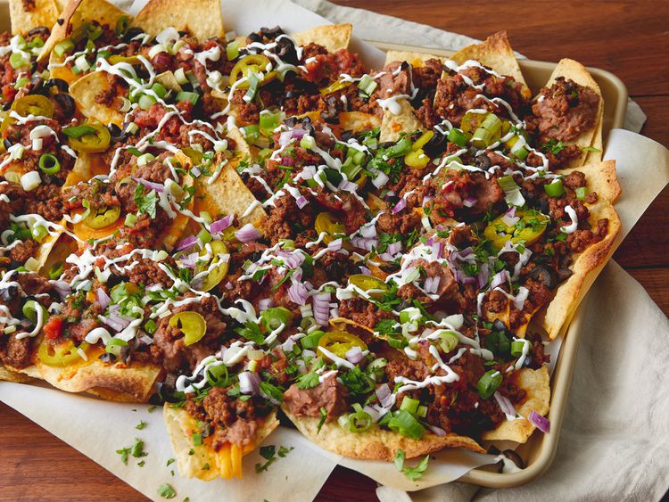

Super Nachos

Description
These homemade nachos are great for game day. This recipe makes a huge meal-sized tray of nachos with lots of good stuff! You can adjust ingredient quantities to suit your preference. Serve with extra chips if required.
Ingredients
- 1 pound ground beef
- ¾ cup water
- 1 (1.25 ounce) package taco seasoning mix
- 1 (18 ounce) package restaurant-style tortilla chips
- 1 cup shredded sharp Cheddar cheese, or more to taste/li>
- 1 (15.5 ounce) can refried beans
- 1 (10 ounce) can pitted black olives, drained and chopped
- 1 cup salsa
- 1 cup sour cream, or more to taste
- 4 green onions, diced
- 1 (4 ounce) can sliced jalapeno peppers, drained
Steps
- Preheat the oven broiler. Set the oven rack about 6 inches from the heat source. Line a baking sheet with aluminum foil..
- Cook and stir ground beef in a skillet over medium heat until meat is crumbly and no longer pink, 5 to 10 minutes. Drain excess grease. Stir in water and taco seasoning mix; simmer until beef mixture has thickened, 8 to 10 minutes.
- Cook and stir ground beef in a skillet over medium heat until meat is crumbly and no longer pink, 5 to 10 minutes. Drain excess grease. Stir in water and taco seasoning mix; simmer until beef mixture has thickened, 8 to 10 minutes.
- Broil in the preheated oven until cheese is melted, 3 to 5 minutes. Top nachos with olives, salsa, sour cream, green onions, and jalapeño peppers.